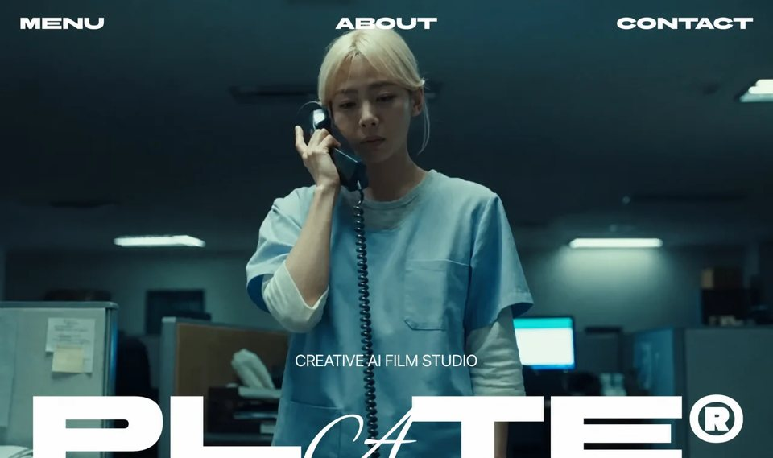

AI Film Studio
Creativecreativeyilai-ai 公开页面
收录时间：2026-08-14正文：13,750 字符

本地预览图 · jpeg
完整提示词
# PROMPT: Recreate the "PLATE®" one-page scroll site exactly
Build a single-page site with three files: `index.html`, `style.css`, `main.js`. It is a black, scroll-driven cinematic page for a fictional "Creative AI Film Studio" called **PLATE®**. One continuous background video is scrubbed by scroll across a 900vh runway, with two rotating "wipe" reveals, a works section, and 3D-exit typography. Only colors: black, white, and `#EB0004` red (focus rings only).
## Assets
**Video (all three layers use this same URL):**
```
https://d8j0ntlcm91z4.cloudfront.net/user_38xzZboKViGWJOttwIXH07lWA1P/hf_20260811_035902_54447887-412b-4a6b-8708-4ea68bde19f8.mp4
```
**Fonts** (Google Fonts, with preconnect to `fonts.googleapis.com` and `fonts.gstatic.com` crossorigin):
```
https://fonts.googleapis.com/css2?family=BBH+Bartle&family=Alex+Brush&family=Inter+Tight:wght@400;500&display=swap
```
- **BBH Bartle** — display/nav (header items, PLATE® mark, works title)
- **Alex Brush** — cursive script (the "A" in PLATE, the "(true)" script, stat numbers)
- **Inter Tight** 400/500 — body/UI text
**Library:** `https://cdn.jsdelivr.net/npm/mp4box@0.5.2/dist/mp4box.all.min.js` (deferred), plus `main.js` as `type="module"`.
## index.html structure
- `<meta charset>`, viewport with `viewport-fit=cover`, `<title>PLATE</title>`, description "PLATE".
- Inline `<script>document.documentElement.classList.add('js')</script>` in head **before first paint** — entrance styles key off `.js`; a deferred script would flash the rested state.
- Three fixed video layers, each a `<video muted playsinline tabindex="-1">` + a `<canvas class="plate" width="1280" height="720">`:
1. `.stage` (`#stage`, z0) with `#v1` (`preload="auto"`, `aria-hidden`) + `#c1`
2. `.reveal.reveal--a` (`#ra`, z5, `aria-hidden`) with `#v2` (`preload="metadata"`) + `#c2`
3. `.reveal.reveal--b` (`#rb`, z7) with `#v3` (`preload="metadata"`) + `#c3`
- `src` in markup, not JS; no `crossorigin` attribute.
- `.sec2.is-hidden` (`#sec2`, z6, `aria-hidden`) containing `.strip` (`#strip`) with `data-block` children:
- `.w-title`: eyebrow `Selected work` + `<h2 class="w-mark">Built false, shot <span class="w-script">(true)</span>®</h2>`
- `.w-desc1`: "Every scene starts as a plate. We light it, shoot it, keep what the lens kept. The only effect is that you cannot find one."
- `.w-list` with two columns of `.w-row` (`.w-year`/`.w-brand` underlined/`.w-name`):
- Left (year first): 2024 Aformo "No slow motion" / 2023 Vessel "No speed ramping" / 2022 Meridian "Away to another angle"
- Right (year last): Halcyon "No on-screen text" 2025 / Cinder "One long take" 2024 / Northbound "No cuts" 2026
- `.w-desc2`: "Pure video. No cuts, no slow motion, no speed ramping, no on-screen text, no cutting away to another angle."
- `.chrome` (fixed, z10, `pointer-events:none`, `perspective:1200px`) containing:
- `.header` with three links: Menu (`#menu`), About (`#about`), Contact (`#contact`)
- `.title.exit-3d`: `<p class="title__tag">Creative AI Film Studio</p>` + `<h1 class="title__mark">PL<span class="title__script">A</span>TE®</h1>` — **no whitespace inside the h1** (no word-break points); the span is a real letter so NOT aria-hidden
- `.about.rise`: "Impossible scenes, shot like they happened. No seams, no tell, nothing that gives it away. The camera believes it, so you will too."
- Three `<dl class="stat exit-3d is-gone" data-stat>` counters: Clients (73), Sets built (208), Fixed in post (0) — numbers wrapped in parentheses, `dt.stat__label` / `dd.stat__num`. `is-gone` in markup so with JS off they're hidden, not stacked.
- `<div class="runway"></div>` — the only element in normal flow.
## style.css (exact values)
Tokens sized off a 1470×956 Figma canvas (px ÷ 1470 → vw):
```css
:root{
--red:#EB0004;
--fs-display:13.6054vw; /* 200px @1470 */
--fs-stat:6.8027vw; /* 100px — no floor, shrinks in lockstep with display */
--fs-work:max(24px,3.4014vw); /* 50px */
--fs-ui:max(13px,2.0408vw); /* 30px */
--fs-micro:max(11px,1.0204vw); /* 15px */
--gap-title:max(10px,1.6327vw);
--pad-header:max(16px,2.7211vw);
--top-header:max(16px,2.1769vw);
--ease-expo:cubic-bezier(0.16,1,0.3,1);
--runway:900vh;
}
```
- **no global letter-spacing**. `html,body`: `background:#000; overscroll-behavior:none`. Body: Inter Tight stack, `#fff`, antialiased.
- `.stage`: fixed inset 0, z0, `opacity:calc(1 - var(--stage-out,0))` — fades in reveal A's tail so black replaces black. Videos/canvases: absolute inset 0, 100%, `object-fit:cover`.
- **Reveals** — not masks/clip-paths: an `overflow:hidden` box whose **width grows while it rotates**, media inside counter-rotated by the negative angle so the picture stays upright. Media locked at 100vw×100vh centered so growth *reveals*, never stretches. Hard edge, no feather.
```css
.reveal{--rot:calc(var(--reveal,0)*var(--angle)); position:fixed; top:50%; left:50%;
width:calc(var(--reveal,0)*var(--span-w)); height:var(--span-h);
transform:translate(-50%,-50%) rotate(var(--rot)); overflow:hidden; pointer-events:none; background:#000}
.reveal--a{z-index:5;--angle:-45deg;--span-w:calc(72vw + 72vh);--span-h:calc(72vw + 72vh)}
.reveal--b{z-index:7;--angle:0deg;--span-w:102vw;--span-h:102vh}
.reveal video,.reveal canvas{position:absolute;top:50%;left:50%;width:100vw;height:100vh;
object-fit:cover;transform:translate(-50%,-50%) rotate(calc(var(--rot)*-1))}
```
(Span derivation: a rect rotated t needs W·cos t + H·sin t; 45° → 0.707·(W+H) ≈ 72vw+72vh.)
- `canvas.plate{opacity:0;transition:opacity 240ms linear}` → `.is-live{opacity:1}`. `.is-covered{visibility:hidden}`.
- **Header**: absolute, `top:calc(var(--top-header) + env(safe-area-inset-top))`, flex space-between, each item `flex:1 1 0; min-width:0`, BBH Bartle, uppercase, `font-size:var(--fs-ui)`, nowrap, `pointer-events:auto`. Center item text-center, right item text-right. Hover (fine pointer only) opacity .65; `:active` scale .97; `:focus-visible` `outline:2px solid var(--red); outline-offset:4px; box-shadow:0 0 0 6px rgba(0,0,0,.9)`.
- **Title**: absolute, `bottom:env(safe-area-inset-bottom)`, column, centered, `gap:var(--gap-title)`. Tag: Inter Tight 400, `--fs-ui`, uppercase, centered. Mark: BBH Bartle, `--fs-display`, `line-height:100%`, nowrap. **`.title__script{font-family:'Alex Brush',cursive; line-height:0}`** — line-height:0 is load-bearing: it stops Alex Brush's metrics growing the 200px line box to 230px; the swash overpaints the T on its own, do not position by hand.
- **`.exit-3d`** (reusable scroll exit): `transform:translate3d(0,0,calc(var(--exit,0)*var(--exit-z,680px))); opacity:calc(1 - var(--exit,0)*var(--exit,0))`. With `.chrome`'s perspective at viewport center, +Z both scales the block and pushes it down out of frame; Z ramp stays linear (projection supplies acceleration). Blur gated: `.is-exiting{filter:blur(calc(var(--exit)*var(--exit)*var(--exit-blur,8px)))}`; `.is-gone{visibility:hidden;filter:none}`.
- **`.rise`** (entrance from below): `opacity:var(--in,0); transform:translateY(calc((1 - var(--in,0))*var(--rise-y,2em)))`; `.is-anim{filter:blur(calc((1-var(--in))^2 * var(--rise-blur,5px)))}` (squared); `.is-hidden{visibility:hidden}`.
- **`.about`**: absolute, `left:max(20px,3.9456vw); bottom:max(16px,6.9038vh); width:max(260px,46.0544vw)`; Inter Tight 500, `--fs-ui`, `line-height:100%`.
- **`.stat`**: absolute, `bottom:calc(env(safe-area-inset-bottom) + max(12px,2.0921vh))`, column centered, `gap:var(--gap-title)`; rested `--exit:1`; **`--exit-z:464px`** (measured so its arrival/departure reads identically to the logo's 680px given it sits 81px lower). Label: Inter Tight, `--fs-ui`, uppercase. Number: Alex Brush, `--fs-stat`, `line-height:100%` (no line-height:0 here — the block is pure Alex Brush).
- **`.sec2`**: fixed inset 0, z6, `overflow:hidden`, `pointer-events:none`, Inter Tight 500; `.is-hidden{visibility:hidden}`. `.strip`: absolute top-left, 100vw, `transform:translateY(var(--s2y,0)); will-change:transform`; `.strip > *{opacity:var(--o,0)}`.
- `.w-title`: `left:3.5374vw; top:22.9252vw; width:38.3673vw`, column, `gap:1.6327vw`; `.is-entering{filter:blur(var(--wb,0))}`. Eyebrow: `--fs-micro` uppercase. `.w-mark`: BBH Bartle, `--fs-work`. `.w-script`: Alex Brush, `line-height:0`.
- `.w-desc1`: `left:50%; top:58.7755vw; width:calc(50% - var(--pad-header))`, `--fs-ui`.
- `.w-list`: `top:110.2041vw; left:50%; width:64.2857vw; translateX(-50%)`, row, `gap:2.7211vw`. Columns: `gap:2.6531vw`; left `width:32.7891vw` align end; right `28.7755vw` align start.
- `.w-row`: row, `gap:1.3605vw`, `transform:translateX(calc(var(--dir,1)*var(--fly,0)*var(--fly-x,62vw))); opacity:calc(1 - var(--fly)^2)`; `.is-flying{filter:blur(calc(var(--fly)^2 * var(--fly-blur,12px)))}`; left col `--dir:-1` text-right, right col `--dir:1`. Year `--fs-micro`, brand `--fs-ui` underlined, name `--fs-ui`, all nowrap.
- `.w-desc2`: `top:125.8503vw; left:50%; width:38.2993vw; translateX(-50%)`, `--fs-micro`, centered.
- `.runway{height:var(--runway)}`.
- **Entrance** (blur-in house signature; rested state correct with JS off): `.js` hides mark/tag/header items (`opacity:0`; mark `blur(14px)`; header items `blur(8px) translateY(12px)`). `.is-ready` transitions: mark 1400ms `--ease-expo` opacity+filter; tag 700ms delay 380ms; header items 700ms opacity/filter/transform with delays 300/360/420ms per nth-child.
- `@media (prefers-reduced-motion:reduce)`: keep fades, drop travel/blur; entrance becomes 200ms linear opacity; stage canvas no transition.
## main.js (scroll engine — exact constants)
ES module. Constants:
```js
WIPE_VH=80; TITLE_Q=0.25; ABOUT_IN=[0.18,0.27]; ABOUT_OUT=[0.333,0.373];
SEC2_RAMP=[0.44,0.56]; FLY=[0.565,0.655]; FLY_STEP=0.20; FLY_DUR=0.60;
STAT_FROM=0.74; STAT_IN=0.34; STAT_HOLD=0.40; SEC2_ENTER=[0.44,0.49];
SEC2_SHOW=[0.43,0.77]; S2_EMERGE=0.84; PIN_FRAC=0.66;
BAND_HL=130; BAND_TOP=220; BAND_BOT=160;
LERP_TAU=8; SNAP=0.002; LRU_MAX=24; LEAD=24; WATCHDOG=60000; FADE_A=[0.93,0.98];
WIPE_LEAD=1; A=1/3; B=2/3;
```
Easing: `expoOut(t)=1-2^(-10t)`, `easeIn(t)=t²`. `titleOut=A*TITLE_Q≈0.0833`, `titleIn=B+(1-B)*(1-TITLE_Q)≈0.9167`.
1. **Entrance**: `document.fonts.ready.then(showPage)` adds `.is-ready` in a rAF; `setTimeout(showPage,2500)` failsafe.
2. **Frame bank (`createClip`)**: for each video+canvas pair, read src from markup; on `loadedmetadata` set `currentTime=0.001` and pause. `build()` uses **MP4Box + WebCodecs VideoDecoder** to decode every frame into WebP blobs (`toBlob('image/webp',0.82)` via offscreen canvas), stored `{ts, blob}` sorted by timestamp. LRU of 24 ImageBitmaps, warm ±(-1..+2) around current index (binary-search `nearestIndex`). Backpressure: max 24 live VideoFrames. Canvas gets `.is-live` only on first *real* paint. On any failure `revert()` — the raw `<video>` scrub (`currentTime = t` when |Δ|>0.01) remains the graceful fallback. Decoder-stage failures get **one retry with `hardwareAcceleration:'prefer-software'`** (hidden-tab hardware decoder refusal), with a run-token guard against stale frames; fetch/MP4Box failures revert outright. `avcC||hvcC||vpcC||av1C` description extracted via `DataStream` (`new Uint8Array(s.buffer, 8)`); configure synchronously in `onReady`. 60s watchdog.
3. **One continuous plate**: build only clip 0, then `shareBank` its bank/dur/ready into clips 1 and 2.
4. **Scroll map** (p = scrollY / (runway − innerHeight)): title exits 0→0.0833; reveal A opens 0.333→0.333+wipe; reveal B 0.667→+wipe; title returns 0.9167→1. `wipe = min(0.28, (80vh in px)/span)`.
5. **updateTitle**: linear e ramp, round to 3 decimals, skip identical writes; toggle `.is-exiting` (e>0) and `.is-gone` (e≥1).
6. **updateStats**: back-to-back slots from STAT_FROM to titleIn, no overlap; per slot: arrive 0.34 (e 1→0), hold 0.40, exit 0.26 (e 0→1) — the logo's own move three times, then the logo itself.
7. **updateAbout**: expoOut in over ABOUT_IN, hold, 1−expoOut out over ABOUT_OUT; toggles `.is-anim` (0<e<1) and `.is-hidden` (e≤0).
8. **updateReveals**: linear, no easing; write `--reveal`; stage `--stage-out` ramps over FADE_A of reveal A; `.is-covered` on stage when ra≥1 and on revA when rb≥1.
9. **updateSec2**: show only within SEC2_SHOW. Strip travels s2Start→s2Pin over SEC2_RAMP then holds (geometry solved from live layout: pin centers works+desc2 group at 0.66 of viewport; start puts the title top at 0.84·H). Per-block opacity = position "reading band": `min(expoOut((top−130)/220), expoOut((H−bottom)/160))`; title also multiplied by SEC2_ENTER expoOut fade with blur `(1−o)²·6px` gated by `.is-entering`. Rows fly apart in pairs (left+right leave together, opposite directions), stagger 0.20, each pair 0.60 of the FLY window, `easeIn`.
10. **updateScrub**: continuous timeline with `WIPE_LEAD=1s` between layers, lead reserved inside the duration (`span = dur − 2·lead`, `t = p·span + i·lead`); lerp `1−exp(−dt·8)` with snap 0.002; render only visible layers.
11. **RAF loop** is the source of truth for viewport changes (compare innerWidth/Height each frame, re-`measure()`); order: title, stats, about, reveals (sets visibility flags), sec2, scrub. Plus debounced resize/orientationchange (120ms) and load → measure.
12. **`window.__plate`** read-only diagnostic: getters for `clips`, `map`, `aboutIn`, `stats`, `sec2`, plus `p()`, `drive(p)` (runs all writers at arbitrary p without scrolling — needed because RAF pauses in hidden panes), and `seek(i,t)`.
`prefers-reduced-motion`: skip bank building, pin strip outright, no fly, scrub holds frame 0.
---把上面的提示词完整复制到支持长文本的 AI 工具中，再按需要替换品牌名、配色与文案。提示词描述的是整页结构与动效节奏，生成后建议在真实浏览器里检查首屏加载和移动端表现。
来源与版权
该条目来自公开提示词页面，原始出处信息未随页面提供。
提示词文本与预览素材的版权归原作者或原平台所有，本站仅作索引与归档。若你是权利人并希望移除本条内容，请通过联系方式告知。